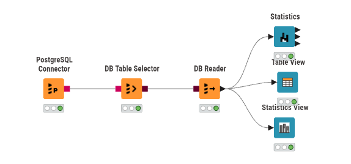
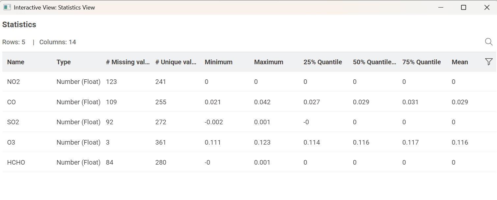

Tugas Pertemuan 2: Pengolahan dan Analisis Data Kualitas Udara Surabaya Menggunakan PostgreSQL dan KNIME#
Proses pengumpulan data kedalam format .CSV#
import pandas as pd
import xarray as xr
unsur_polutan = ["NO2", "CO", "SO2", "O3", "HCHO"]
list_df = []
for polutan in unsur_polutan:
# Membaca file NetCDF
data = xr.load_dataset(
f"kualitas_udara_{polutan}.nc",
engine="netcdf4"
)
# Konversi data xarray menjadi DataFrame Pandas
# reset_index() digunakan untuk memunculkan koordinat waktu 't' menjadi kolom
df_temp = data[polutan].to_dataframe().reset_index()
# Memfilter hanya mengambil kolom waktu ('t') dan kolom nilai polutannya
df_temp = df_temp[['t', polutan]]
# Mengatur kolom 't' sebagai Index agar penggabungan tabel berpatokan pada tanggal
df_temp.set_index('t', inplace=True)
list_df.append(df_temp)
# Menggabungkan semua tabel polutan berdasarkan tanggal
df_gabungan = pd.concat(list_df, axis=1)
# Mengembalikan index tanggal menjadi kolom biasa dan mengganti namanya
df_gabungan.reset_index(inplace=True)
df_gabungan.rename(columns={'index': 'tanggal', 't': 'tanggal'}, inplace=True)
# Format kolom tanggal menjadi YYYY-MM-DD agar mudah dibaca PostgreSQL
df_gabungan['tanggal'] = pd.to_datetime(df_gabungan['tanggal']).dt.date
# Menyimpan hasil ke format CSV
df_gabungan.to_csv("data_kualitas_udara_surabaya.csv", index=False)
Upload CSV ke PostgreSQL#
Aiven.io#
Langkah-langkah yang perlu dilakukan:
Buka Aiven.io, kemudian lakukan login.
Buat project baru dan pilih layanan PostgreSQL.
Setelah project selesai dibuat, pastikan layanan PostgreSQL berada dalam kondisi ON.
Klik nama project untuk melihat informasi koneksi database seperti host, database name, username, password, dan port.
DBEAVER#
Pada tahap ini, DBeaver digunakan untuk menghubungkan database PostgreSQL yang berada di Aiven.io. Setelah koneksi berhasil, file .csv yang telah dibuat sebelumnya dapat dimasukkan ke dalam database melalui DBeaver.
Langkah-langkah yang perlu dilakukan:
Buka aplikasi DBeaver.
Pilih menu Database pada bagian navigasi atas.
Klik New Database Connection.
Pilih PostgreSQL, kemudian masukkan informasi koneksi dari Aiven.io seperti hostname, database name, username, dan password.
Klik Next dan lanjutkan proses hingga bagian pengaturan tipe data.
Periksa kembali tipe data setiap kolom untuk memastikan sudah sesuai dengan data yang akan dimasukkan.
Jika tipe data sudah sesuai, klik Next atau Proceed untuk melanjutkan proses.
KNIME#
Pada tahap ini, data kualitas udara Surabaya yang telah tersimpan di PostgreSQL pada Aiven.io akan digunakan untuk membuat workflow pada KNIME. Workflow tersebut digunakan untuk mengambil data dari database dan melakukan eksplorasi serta analisis statistik awal.
Langkah-langkah yang perlu dilakukan:
Buka aplikasi KNIME.
Buat workflow baru dengan memilih Create New Project atau menggunakan ikon +.
Pada menu Nodes, cari dan tambahkan PostgreSQL Connector.
Konfigurasikan PostgreSQL Connector menggunakan informasi koneksi database yang terdapat pada Aiven.io.
Tambahkan node DB Table Selector, kemudian hubungkan dengan PostgreSQL Connector.
Pada DB Table Selector, pilih schema public dan tabel data_kualitas_udara_surabaya.
Tambahkan node DB Reader dan hubungkan dengan DB Table Selector untuk membaca data dari database.
Tambahkan tiga node untuk proses eksplorasi data, yaitu Statistics, Table View, dan Statistics View.
Hubungkan ketiga node tersebut dengan output dari DB Reader.
Jalankan node Statistics untuk memperoleh informasi statistik dari data.
Jalankan Table View untuk melihat isi dataset dalam bentuk tabel.
Jalankan Statistics View untuk melihat ringkasan statistik dan informasi data secara lebih lengkap.
HASIL WORKFLOW#
Setelah seluruh node berhasil dikonfigurasi dan dijalankan, diperoleh workflow untuk mengambil data kualitas udara Surabaya dari PostgreSQL pada Aiven.io. Workflow tersebut terdiri dari PostgreSQL Connector, DB Table Selector, DB Reader, serta tiga node untuk melihat dan menganalisis data, yaitu Statistics, Table View, dan Statistics View.

HASIL STATISTIC VIEW#
Hasil dari proses statistik menampilkan informasi mengenai data lima parameter kualitas udara, yaitu NO2, CO, SO2, O3, dan HCHO. Informasi yang ditampilkan meliputi tipe data, jumlah nilai yang hilang, jumlah nilai unik, nilai minimum, nilai maksimum, kuartil, serta nilai rata-rata dari masing-masing parameter.

Penjelasan Masing-Masing Properti#
Column
Column merupakan nama fitur, atribut, atau variabel yang terdapat pada dataset dan digunakan dalam proses analisis statistik. Setiap kolom menunjukkan parameter tertentu yang ingin dianalisis. Pada dataset kualitas udara Surabaya, terdapat lima parameter polutan yang dianalisis, yaitu NO2, CO, SO2, O3, dan HCHO. Selain itu, dataset juga memiliki kolom tanggal yang digunakan sebagai penanda waktu pengamatan.Cara Penentuan: Nama column diperoleh secara langsung dari struktur tabel yang telah dibaca oleh KNIME melalui PostgreSQL. Setiap nama kolom menunjukkan jenis data atau parameter yang terdapat di dalam dataset.
Min (Minimum)
Min atau minimum merupakan nilai paling kecil yang ditemukan pada suatu kolom dari seluruh data yang memiliki nilai valid. Properti ini digunakan untuk mengetahui batas nilai terendah dari masing-masing parameter kualitas udara. Dengan mengetahui nilai minimum, dapat diketahui nilai paling rendah yang tercatat pada periode pengamatan.Nilai minimum tidak dihitung menggunakan data yang kosong atau NULL. Oleh karena itu, jumlah data yang digunakan untuk menentukan nilai minimum dapat berbeda antara satu parameter dengan parameter lainnya karena setiap kolom memiliki jumlah data missing yang berbeda.
Cara Menghitung: Seluruh data valid pada suatu kolom diperiksa atau diurutkan dari nilai paling kecil hingga nilai paling besar. Nilai yang berada pada posisi paling awal merupakan nilai minimum.
\[Min(X) = \min(X)\]Mean (Rata-rata)
Mean atau rata-rata merupakan nilai yang menunjukkan rata-rata keseluruhan data valid pada suatu kolom. Properti ini memberikan gambaran umum mengenai nilai suatu parameter kualitas udara selama periode pengamatan. Nilai mean diperoleh dengan menggunakan seluruh data yang memiliki nilai valid pada kolom tersebut.Semakin dekat nilai-nilai data dengan mean, maka penyebaran data cenderung lebih terkonsentrasi di sekitar nilai rata-rata. Namun, mean dapat dipengaruhi oleh nilai yang sangat besar atau sangat kecil karena seluruh nilai data ikut diperhitungkan dalam proses penjumlahan.
Cara Menghitung: Seluruh nilai data yang valid dijumlahkan, kemudian hasil penjumlahan tersebut dibagi dengan jumlah data valid.
\[\bar{x} = \frac{1}{n}\sum_{i=1}^{n}x_i\]Keterangan:
\(\bar{x}\) = nilai rata-rata
\(x_i\) = nilai data ke-i
\(n\) = jumlah data valid
Median (Nilai Tengah)
Median merupakan nilai yang berada di tengah setelah seluruh data valid pada suatu kolom diurutkan dari nilai terkecil hingga terbesar. Median digunakan untuk mengetahui posisi tengah dari suatu kumpulan data. Berbeda dengan mean, median relatif lebih tidak terpengaruh oleh nilai yang sangat ekstrem karena hanya mempertimbangkan posisi data setelah diurutkan.Median juga berguna ketika suatu dataset memiliki penyebaran nilai yang tidak merata. Dengan membandingkan nilai median dan mean, dapat diperoleh gambaran awal mengenai bentuk distribusi data dan kemungkinan adanya nilai ekstrem.
Cara Menghitung: Pertama, seluruh data valid diurutkan dari nilai terkecil hingga terbesar. Jika jumlah data valid adalah ganjil, nilai yang berada tepat di tengah menjadi median. Jika jumlah data valid adalah genap, median diperoleh dari rata-rata dua nilai yang berada di posisi tengah.
Untuk jumlah data ganjil:
\[Median = x_{\frac{n+1}{2}}\]Untuk jumlah data genap:
\[Median = \frac{x_{\frac{n}{2}} + x_{\frac{n}{2}+1}}{2}\]Max (Maksimum)
Max atau maksimum merupakan nilai paling besar yang terdapat pada suatu kolom dari seluruh data valid. Properti ini digunakan untuk mengetahui nilai tertinggi yang tercatat pada masing-masing parameter kualitas udara selama periode pengamatan.Nilai maksimum dapat memberikan informasi mengenai titik pengamatan dengan nilai parameter paling tinggi. Nilai ini juga dapat digunakan sebagai salah satu indikator awal untuk melihat apakah terdapat nilai yang jauh berbeda dibandingkan sebagian besar data lainnya.
Cara Menghitung: Seluruh data valid pada suatu kolom diurutkan dari nilai terkecil hingga terbesar. Nilai yang berada pada posisi terakhir atau paling besar merupakan nilai maksimum.
\[Max(X) = \max(X)\]Std. Dev. (Standard Deviation)
Standard Deviation atau standar deviasi merupakan ukuran yang digunakan untuk mengetahui seberapa besar penyebaran data terhadap nilai rata-ratanya. Properti ini menunjukkan tingkat variasi yang terdapat pada suatu parameter kualitas udara.Jika nilai standar deviasi kecil, berarti sebagian besar data cenderung berada di sekitar nilai rata-rata. Sebaliknya, jika nilai standar deviasi semakin besar, berarti data memiliki penyebaran yang lebih luas dan terdapat perbedaan nilai yang lebih besar dari rata-ratanya.
Dalam analisis ini, standar deviasi digunakan untuk melihat tingkat variasi dari masing-masing parameter polutan seperti NO2, CO, SO2, O3, dan HCHO.
Cara Menghitung: Setiap nilai data dikurangi dengan nilai rata-ratanya. Hasil selisih tersebut kemudian dikuadratkan, dijumlahkan, dibagi dengan jumlah data dikurangi satu untuk memperoleh varians sampel, kemudian hasilnya diakarkan.
\[s = \sqrt{\frac{1}{n-1}\sum_{i=1}^{n}(x_i-\bar{x})^2}\]Keterangan:
\(s\) = standar deviasi sampel
\(x_i\) = nilai data ke-i
\(\bar{x}\) = nilai rata-rata
\(n\) = jumlah data valid
Skewness (Kemencengan)
Skewness atau kemencengan merupakan ukuran statistik yang digunakan untuk mengetahui tingkat ketidaksimetrisan distribusi data. Properti ini menunjukkan apakah distribusi data cenderung memiliki ekor yang lebih panjang ke arah kanan atau ke arah kiri.Nilai skewness yang lebih besar dari 0 menunjukkan bahwa distribusi cenderung memiliki ekor yang memanjang ke arah kanan. Nilai skewness yang lebih kecil dari 0 menunjukkan bahwa distribusi cenderung memiliki ekor yang memanjang ke arah kiri. Sementara itu, nilai yang mendekati 0 menunjukkan bahwa distribusi data relatif lebih simetris.
Skewness dapat membantu dalam memahami pola penyebaran data masing-masing polutan dan mengetahui apakah terdapat kecenderungan nilai tertentu yang lebih dominan dibandingkan nilai lainnya.
Cara Menghitung: Skewness dihitung dengan menggunakan deviasi data terhadap nilai rata-rata dalam bentuk pangkat tiga. Nilai tersebut kemudian dibandingkan dengan standar deviasi pangkat tiga.
\[g_1 = \frac{\frac{1}{n}\sum_{i=1}^{n}(x_i-\bar{x})^3}{s^3}\]Kurtosis (Keruncingan)
Kurtosis atau keruncingan merupakan ukuran statistik yang digunakan untuk mengetahui karakteristik bentuk distribusi data, khususnya tingkat keruncingan bagian puncak dan ketebalan ekor distribusi. Properti ini dapat memberikan gambaran mengenai kemungkinan munculnya nilai yang jauh dari pusat distribusi.Nilai kurtosis yang tinggi menunjukkan bahwa distribusi memiliki ekor yang lebih berat dan dapat mengindikasikan adanya lebih banyak nilai ekstrem. Sebaliknya, nilai kurtosis yang rendah atau negatif menunjukkan distribusi yang cenderung lebih datar dibandingkan distribusi normal.
Pada analisis kualitas udara, kurtosis dapat digunakan untuk melihat apakah nilai suatu parameter polutan memiliki distribusi yang relatif terkonsentrasi atau memiliki kecenderungan munculnya nilai yang jauh dari nilai rata-rata.
Cara Menghitung: Kurtosis dihitung menggunakan deviasi data terhadap rata-rata dalam bentuk pangkat empat. Hasilnya dibandingkan dengan standar deviasi pangkat empat dan dikurangi 3 sebagai acuan terhadap distribusi normal.
\[g_2 = \frac{\frac{1}{n}\sum_{i=1}^{n}(x_i-\bar{x})^4}{s^4}-3\]No. Missing
No. Missing menunjukkan jumlah data yang tidak memiliki nilai atau kosong pada suatu kolom. Data missing dapat berupa nilai NULL atau sel yang tidak memiliki data yang dapat digunakan dalam proses perhitungan statistik.Properti ini penting karena jumlah data valid pada setiap parameter dapat berbeda. Pada dataset kualitas udara Surabaya, terdapat beberapa nilai missing pada parameter NO2, CO, SO2, O3, dan HCHO. Oleh karena itu, statistik seperti mean, median, minimum, dan maksimum dihitung berdasarkan jumlah data yang tersedia dan valid pada masing-masing kolom.
Cara Menghitung: Sistem memeriksa seluruh baris pada suatu kolom dan menghitung jumlah sel yang kosong atau memiliki nilai NULL. Jumlah tersebut kemudian ditampilkan sebagai nilai No. Missing.
No. +Infinity
No. +Infinity menunjukkan jumlah data yang memiliki nilai tak terhingga positif atau +∞. Nilai +∞ berbeda dengan nilai numerik biasa karena nilainya tidak memiliki batas maksimum tertentu.Nilai seperti ini dapat muncul pada dataset hasil proses komputasi tertentu, misalnya ketika suatu operasi matematika menghasilkan nilai yang sangat besar atau terjadi pembagian bilangan positif dengan nol. Pemeriksaan properti ini diperlukan untuk memastikan bahwa data tidak mengandung nilai tak terhingga yang dapat mengganggu proses analisis statistik.
Cara Menghitung: Sistem memeriksa setiap nilai pada kolom dan menghitung jumlah data yang terdeteksi sebagai nilai +∞.
No. -Infinity
No. -Infinity menunjukkan jumlah data yang memiliki nilai tak terhingga negatif atau -∞. Sama seperti +Infinity, nilai -∞ bukan merupakan nilai numerik biasa dan perlu diperiksa sebelum data digunakan untuk analisis lebih lanjut.Pemeriksaan ini membantu memastikan bahwa dataset tidak memiliki nilai negatif tak terhingga yang dapat memengaruhi hasil perhitungan statistik seperti mean, standar deviasi, skewness, maupun kurtosis.
Cara Menghitung: Sistem memeriksa seluruh nilai pada suatu kolom dan menghitung jumlah data yang terdeteksi memiliki nilai -∞.
Histogram
Histogram merupakan representasi grafik yang digunakan untuk menunjukkan distribusi frekuensi data dalam suatu kolom. Histogram membagi rentang nilai data menjadi beberapa interval atau bin, kemudian menghitung jumlah data yang terdapat pada setiap interval tersebut.Dengan histogram, pola penyebaran data dapat diamati secara visual. Grafik ini dapat membantu melihat apakah data cenderung terkonsentrasi pada rentang nilai tertentu, tersebar secara merata, atau memiliki nilai yang jauh berbeda dari sebagian besar data.
Dalam analisis kualitas udara Surabaya, histogram dapat digunakan untuk melihat pola distribusi masing-masing parameter polutan seperti NO2, CO, SO2, O3, dan HCHO.
Cara Menghitung: Rentang nilai dari minimum hingga maksimum dibagi menjadi beberapa interval atau bin. Selanjutnya, jumlah data yang masuk ke dalam setiap interval dihitung dan ditampilkan dalam bentuk batang histogram.
Perhitungan yang Dihasilkan dari Setiap Properti#
Kolom : NO2#
Min:
Nilai minimum pada kolom NO2 diperoleh dengan memeriksa seluruh data NO2 yang memiliki nilai valid, kemudian mencari nilai yang paling kecil. Berdasarkan hasil yang ditampilkan pada Statistics View, nilai minimum NO2 ditampilkan sebesar 0. Nilai tersebut merupakan nilai terendah dari data NO2 yang dapat digunakan dalam proses analisis.
Hasil: 0
Mean:
Nilai mean atau rata-rata diperoleh dengan menjumlahkan seluruh nilai NO2 yang valid, kemudian membaginya dengan jumlah data valid. Pada kolom NO2 terdapat 241 data valid, sedangkan 123 data merupakan missing value dari total 364 baris. Hasil mean pada Statistics View ditampilkan sebesar 0 karena nilai yang diperoleh sangat kecil dan ditampilkan dalam bentuk pembulatan.
Secara umum, perhitungan rata-rata dilakukan menggunakan rumus:
dengan \(n\) merupakan jumlah data NO2 yang valid.
Hasil: 0
Median:
Median diperoleh dengan mengurutkan seluruh 241 data NO2 yang valid dari nilai terkecil hingga terbesar. Karena jumlah data valid adalah 241, maka jumlah tersebut merupakan bilangan ganjil. Oleh karena itu, nilai median berada pada posisi tengah, yaitu posisi ke-121.
Berdasarkan hasil Statistics View, nilai median NO2 ditampilkan sebesar 0.
Hasil: 0
Max:
Nilai maksimum diperoleh dengan mencari nilai NO2 yang paling besar dari seluruh 241 data valid. Setelah data diperiksa dan diurutkan dari nilai terkecil hingga terbesar, nilai yang berada pada posisi terakhir merupakan nilai maksimum. Pada Statistics View, nilai maksimum NO2 ditampilkan sebesar 0.
Hasil: 0
Std. Dev.:
Standar deviasi digunakan untuk mengetahui seberapa besar penyebaran nilai NO2 terhadap nilai rata-ratanya. Perhitungan dilakukan dengan mencari selisih setiap nilai NO2 terhadap mean, menguadratkan selisih tersebut, menjumlahkannya, kemudian membaginya dengan jumlah data valid dikurangi satu. Hasil akhirnya diperoleh dengan mengambil akar kuadrat.
Karena nilai NO2 yang ditampilkan pada Statistics View berada pada skala yang sangat kecil dan mengalami pembulatan, nilai standar deviasi perlu mengikuti angka yang ditampilkan secara lengkap pada Statistics View.
Hasil: Mengikuti nilai lengkap pada Statistics View.
Skewness:
Skewness digunakan untuk mengetahui arah kemiringan distribusi data NO2. Perhitungan dilakukan berdasarkan penyimpangan nilai data terhadap rata-ratanya menggunakan pangkat tiga. Nilai positif menunjukkan kecenderungan ekor distribusi ke kanan, sedangkan nilai negatif menunjukkan kecenderungan ekor ke kiri.
Hasil: Mengikuti nilai yang ditampilkan pada Statistics View.
Kurtosis:
Kurtosis digunakan untuk mengetahui tingkat keruncingan distribusi data NO2 serta karakteristik ekornya. Perhitungan menggunakan penyimpangan data terhadap rata-rata dalam bentuk pangkat empat.
Hasil: Mengikuti nilai yang ditampilkan pada Statistics View.
No. Missing:
Pada kolom NO2 terdapat 123 data missing. Jumlah tersebut diperoleh dengan menghitung seluruh baris yang tidak memiliki nilai NO2 yang dapat digunakan. Dari total 364 baris data, sebanyak 123 baris tidak memiliki nilai NO2 sehingga tersisa 241 data valid.
Hasil: 123 data missing dan 241 data valid.
No. +Infinity:
Pemeriksaan terhadap nilai +Infinity dilakukan untuk mengetahui apakah terdapat nilai tak terhingga positif pada kolom NO2. Berdasarkan hasil Statistics View, tidak terdapat nilai +Infinity.
Hasil: 0
No. -Infinity:
Pemeriksaan terhadap nilai -Infinity dilakukan untuk mengetahui apakah terdapat nilai tak terhingga negatif pada kolom NO2. Berdasarkan hasil Statistics View, tidak ditemukan nilai -Infinity.
Hasil: 0
Kolom : CO#
Min:
Nilai minimum diperoleh dengan memeriksa seluruh 255 data CO yang valid dan mencari nilai paling kecil. Dari hasil Statistics View, nilai CO terendah yang tercatat adalah 0.021.
Hasil: 0.021
Mean:
Mean diperoleh dengan menjumlahkan seluruh 255 nilai CO yang valid kemudian membaginya dengan jumlah data tersebut. Perhitungan rata-rata menggambarkan nilai CO secara umum selama periode pengamatan.
Berdasarkan hasil Statistics View, nilai rata-rata CO adalah 0.029.
Hasil: 0.029
Median:
Jumlah data CO yang valid adalah 255, sehingga jumlah datanya ganjil. Setelah seluruh data CO diurutkan dari nilai terkecil hingga terbesar, median berada pada posisi:
Artinya, nilai pada urutan ke-128 merupakan nilai tengah dari seluruh data CO yang valid. Berdasarkan Statistics View, nilai median CO adalah 0.029.
Hasil: 0.029
Max:
Nilai maksimum diperoleh dengan mengambil nilai CO terbesar dari seluruh 255 data valid. Berdasarkan hasil Statistics View, nilai terbesar yang tercatat adalah 0.042.
Hasil: 0.042
Std. Dev.:
Standar deviasi digunakan untuk mengetahui tingkat variasi nilai CO terhadap rata-ratanya. Setiap nilai CO dibandingkan dengan mean 0.029, kemudian selisihnya dikuadratkan dan digunakan dalam perhitungan standar deviasi sampel.
Karena nilai standar deviasi lengkap tidak terlihat pada ringkasan angka yang tersedia, hasilnya mengikuti nilai yang tercantum pada Statistics View.
Hasil: Mengikuti nilai lengkap pada Statistics View.
Skewness:
Skewness menunjukkan kecenderungan kemiringan distribusi nilai CO. Nilainya diperoleh dengan menggunakan deviasi pangkat tiga terhadap rata-rata. Hasil ini dapat digunakan untuk mengetahui apakah distribusi CO lebih condong ke kanan, ke kiri, atau relatif simetris.
Hasil: Mengikuti nilai yang ditampilkan pada Statistics View.
Kurtosis:
Kurtosis menunjukkan karakteristik keruncingan distribusi data CO. Nilai ini dihitung berdasarkan deviasi pangkat empat terhadap nilai rata-rata.
Hasil: Mengikuti nilai yang ditampilkan pada Statistics View.
No. Missing:
Pada kolom CO terdapat 109 data missing dari total 364 baris. Dengan demikian, jumlah data CO yang dapat digunakan untuk perhitungan statistik adalah:
Jadi terdapat 255 data valid yang digunakan untuk menghitung Min, Mean, Median, Max, dan statistik lainnya.
Hasil: 109 data missing dan 255 data valid.
No. +Infinity:
Hasil pemeriksaan menunjukkan bahwa tidak terdapat nilai +Infinity pada kolom CO.
Hasil: 0
No. -Infinity:
Hasil pemeriksaan menunjukkan bahwa tidak terdapat nilai -Infinity pada kolom CO.
Hasil: 0
Kolom : SO2#
Min:
Nilai minimum SO2 diperoleh dari nilai terkecil pada seluruh 272 data SO2 yang valid. Berdasarkan hasil Statistics View, nilai minimum yang ditampilkan adalah -0.002.
Hasil: -0.002
Mean:
Nilai mean diperoleh dengan menjumlahkan seluruh nilai SO2 yang valid kemudian membaginya dengan 272 data valid. Berdasarkan hasil Statistics View, nilai rata-rata SO2 ditampilkan sebesar 0 karena hasilnya mengalami pembulatan pada tampilan.
Hasil: 0
Median:
Jumlah data SO2 yang valid adalah 272, sehingga jumlah data tersebut merupakan bilangan genap. Oleh karena itu, median diperoleh dari rata-rata dua nilai yang berada pada posisi tengah, yaitu posisi ke-136 dan ke-137.
Berdasarkan hasil Statistics View, median SO2 ditampilkan sebesar 0.
Hasil: 0
Max:
Nilai maksimum merupakan nilai SO2 terbesar dari 272 data valid. Berdasarkan hasil Statistics View, nilai maksimum yang tercatat adalah 0.001.
Hasil: 0.001
Std. Dev.:
Standar deviasi digunakan untuk mengetahui seberapa besar penyebaran nilai SO2 terhadap rata-ratanya. Perhitungan dilakukan menggunakan seluruh 272 data valid dan rumus standar deviasi sampel.
Hasil: Mengikuti nilai lengkap pada Statistics View.
Skewness:
Skewness digunakan untuk mengetahui bentuk kemiringan distribusi nilai SO2. Nilai ini dihitung menggunakan deviasi pangkat tiga dari setiap data terhadap rata-ratanya.
Hasil: Mengikuti nilai yang ditampilkan pada Statistics View.
Kurtosis:
Kurtosis digunakan untuk mengetahui tingkat keruncingan distribusi data SO2 dibandingkan dengan distribusi normal.
Hasil: Mengikuti nilai yang ditampilkan pada Statistics View.
No. Missing:
Pada kolom SO2 terdapat 92 data missing dari total 364 baris. Dengan demikian, jumlah data valid yang digunakan dalam proses perhitungan adalah:
Hasil: 92 data missing dan 272 data valid.
No. +Infinity:
Tidak ditemukan nilai +Infinity pada data SO2.
Hasil: 0
No. -Infinity:
Tidak ditemukan nilai -Infinity pada data SO2.
Hasil: 0
Kolom : O3#
Min:
Nilai minimum O3 diperoleh dari nilai terkecil pada seluruh 361 data O3 yang valid. Berdasarkan hasil Statistics View, nilai minimum yang tercatat adalah 0.111.
Hasil: 0.111
Mean:
Mean O3 dihitung dengan menjumlahkan seluruh nilai O3 yang valid kemudian membaginya dengan jumlah data valid. Pada kolom O3 terdapat 361 data valid.
Berdasarkan hasil Statistics View, nilai rata-rata O3 adalah 0.116.
Hasil: 0.116
Median:
Jumlah data O3 yang valid adalah 361, sehingga jumlahnya ganjil. Posisi median dapat dihitung sebagai berikut:
Dengan demikian, nilai pada urutan ke-181 setelah data diurutkan merupakan nilai median. Berdasarkan Statistics View, median O3 ditampilkan sebesar 0.116.
Hasil: 0.116
Max:
Nilai maksimum diperoleh dengan mencari nilai O3 terbesar dari seluruh 361 data valid. Berdasarkan hasil Statistics View, nilai maksimum O3 adalah 0.123.
Hasil: 0.123
Std. Dev.:
Standar deviasi menunjukkan seberapa jauh nilai O3 tersebar dari rata-ratanya. Perhitungannya menggunakan 361 data valid dengan rumus standar deviasi sampel. Nilai yang lebih kecil menunjukkan bahwa data lebih terkonsentrasi di sekitar nilai rata-rata.
Hasil: Mengikuti nilai lengkap pada Statistics View.
Skewness:
Skewness digunakan untuk melihat kecenderungan kemiringan distribusi nilai O3. Perhitungan didasarkan pada deviasi pangkat tiga setiap nilai terhadap rata-rata.
Hasil: Mengikuti nilai yang ditampilkan pada Statistics View.
Kurtosis:
Kurtosis digunakan untuk mengetahui tingkat keruncingan distribusi data O3 dan karakteristik ekornya.
Hasil: Mengikuti nilai yang ditampilkan pada Statistics View.
No. Missing:
Kolom O3 memiliki jumlah missing yang paling sedikit dibandingkan beberapa parameter lainnya. Dari total 364 baris data, terdapat 3 data missing.
Jumlah data valid dapat dihitung:
Dengan demikian, sebanyak 361 data O3 dapat digunakan dalam proses analisis statistik.
Hasil: 3 data missing dan 361 data valid.
No. +Infinity:
Tidak terdapat nilai +Infinity pada kolom O3.
Hasil: 0
No. -Infinity:
Tidak terdapat nilai -Infinity pada kolom O3.
Hasil: 0
Kolom : HCHO#
Min:
Nilai minimum HCHO diperoleh dengan memeriksa seluruh 280 data HCHO yang valid dan mencari nilai paling kecil. Pada Statistics View, nilai minimum HCHO ditampilkan sebesar 0.
Hasil: 0
Mean:
Mean HCHO diperoleh dengan menjumlahkan seluruh nilai HCHO valid kemudian membaginya dengan jumlah data valid, yaitu 280 data. Hasil mean ditampilkan sebagai 0 pada Statistics View karena nilai yang diperoleh sangat kecil dan mengalami pembulatan.
Hasil: 0
Median:
Jumlah data HCHO yang valid adalah 280, sehingga jumlah data tersebut genap. Median diperoleh dengan mengambil dua nilai yang berada di tengah, yaitu posisi ke-140 dan ke-141, kemudian menghitung rata-ratanya.
Berdasarkan hasil Statistics View, nilai median HCHO ditampilkan sebesar 0.
Hasil: 0
Max:
Nilai maksimum HCHO diperoleh dengan mencari nilai terbesar dari seluruh 280 data valid. Berdasarkan Statistics View, nilai maksimum HCHO adalah 0.001.
Hasil: 0.001
Std. Dev.:
Standar deviasi digunakan untuk mengetahui tingkat penyebaran nilai HCHO terhadap nilai rata-ratanya. Perhitungan dilakukan dengan menggunakan selisih setiap data terhadap mean, kemudian menerapkan rumus standar deviasi sampel.
Hasil: Mengikuti nilai lengkap pada Statistics View.
Skewness:
Skewness digunakan untuk mengetahui arah kemiringan distribusi nilai HCHO. Nilai ini diperoleh berdasarkan deviasi pangkat tiga setiap data terhadap rata-ratanya.
Hasil: Mengikuti nilai yang ditampilkan pada Statistics View.
Kurtosis:
Kurtosis digunakan untuk mengetahui tingkat keruncingan distribusi nilai HCHO. Perhitungan dilakukan berdasarkan deviasi pangkat empat dari data terhadap nilai rata-ratanya.
Hasil: Mengikuti nilai yang ditampilkan pada Statistics View.
No. Missing:
Pada kolom HCHO terdapat 84 data missing dari total 364 baris. Jumlah data valid dapat dihitung dengan:
Dengan demikian, terdapat 280 data HCHO yang dapat digunakan untuk proses perhitungan statistik.
Hasil: 84 data missing dan 280 data valid.
No. +Infinity:
Tidak ditemukan nilai +Infinity pada kolom HCHO.
Hasil: 0
No. -Infinity:
Tidak ditemukan nilai -Infinity pada kolom HCHO.
Hasil: 0